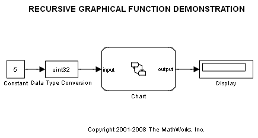
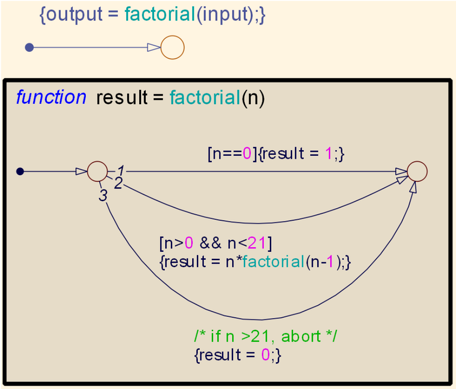

Recursive Graphical Functions
This demonstration illustrates how graphical functions can be used as recursive functions. The graphical function in the chart (called FACTORIAL) returns the factorial value of the input. This is possible because graphical functions can be called from within themselves or from within other graphical functions. The risk in using a recursive function, is the possibility of creating an infinite loop. In this example, FACTORIAL is called when the input value satisfies a certain condition. If the condition is not satisfied, another path within the function is taken and the output in this path is not dependent on the FACTORIAL function.
 